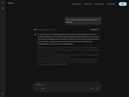

Document your design process while you work.
Press Command twice to save what you're working on, with a line about why. Margin keeps it in a timeline you can sort into themes, so your case study starts from the real record.
Double-click Margin.zip in Downloads, open the Margin folder and drag Margin.app into Applications.
macOS says it can't verify the app. Click Done, then go to System Settings → Privacy & Security, scroll down and click Open Anyway. On macOS 13 or 14: right-click Margin in Applications, choose Open, then Open again.
In System Settings → Privacy & Security, turn Margin on under Screen & System Audio Recording (for captures) and Accessibility (for the shortcut). Reopen Margin if it asks.
Margin sits in the menu bar. Select anything, or nothing, and press ⌘ twice. A card drops in: type why and press Return, or Esc to keep just the capture. The first launch walks you through it.

For clean exports, motion as video and several frames at once. In Margin: Settings → Figma → Install plugin. In Figma: Plugins → Development → Import plugin from manifest…, pick the file Margin shows, then run Plugins → Development → Margin once per file.
In Settings → Claude Code → Connect. Every prompt that changes your project becomes an iteration in Margin, with your words and the result.
● Edited Popup.tsx
✓ Margin saved iteration 14
Why does macOS warn me?
Margin is a student project and isn't signed through the Apple Developer Program yet, so macOS can't check it automatically. Everything it saves stays on your Mac, in Documents → Margin.
macOS says Margin "is damaged".
Open Terminal, run xattr -cr /Applications/Margin.app, then open Margin again.
Do I need API keys?
Only for the AI features: notes on captures, headlines and theme names. Margin works without them. The Read Me in the download shows how to add your own Gemini or OpenAI key.
The shortcut does nothing.
Turn Margin on under Accessibility (step 3), then quit Margin from its menu bar icon and open it again.
Captures come out blank.
Turn Margin on under Screen & System Audio Recording (step 3), then quit and reopen it.
Can I try it with example data?
Yes. Turn on demo mode in Settings to open Umbrella, one of our real projects, with four months of captures.